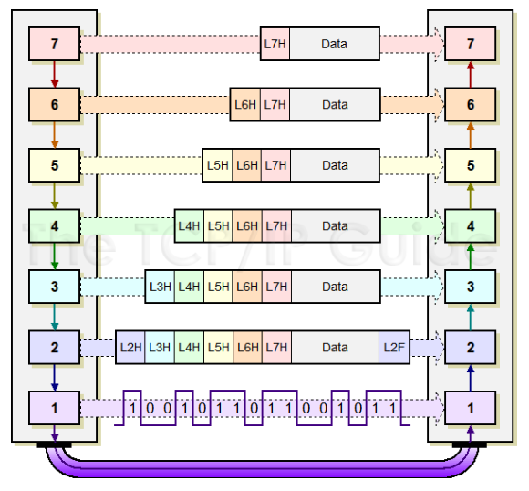

How the Web Works
Internet Addresses
Because the Internet is a global network of computers each computer connected to the Internet must have a unique address.

Ipconfig / Ifconfig
Ping
OSI Model
OSI Model Flow
Ports
Common ports used in web development: HTTP 80
Troubleshooting ports with Telnet.
Netstat
Advanced Networking

Domain Name System (DNS)
13 Root Servers
Many top level domains
Most common top level: .com, .edu, .org, .net, .gov

Packet Capturing with Wireshark
Further Networking / Administration
Cisco CCNA Certification
Window / Linux Administration Certification
Even More
RFC: Request for Comment
https://www.ietf.org/standards/rfcs/